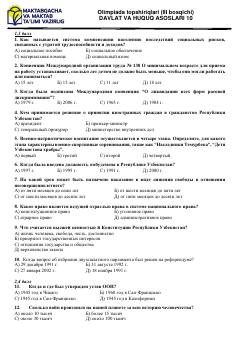

DV10-sinf o'quvchilari uchun davlat va huquq asoslari fanidan olimpiada testlari to'plami.
Ushbu hujjat 10-sinf o'quvchilari uchun davlat va huquq asoslari fanidan o'tkazilgan olimpiadaning uchinchi bosqich test topshiriqlarini o'z ichiga oladi. Testlar O'zbekiston Respublikasi Konstitutsiyasi, huquqiy tizim, xalqaro konvensiyalar va ijtimoiy himoya masalalariga oid savollardan iborat.